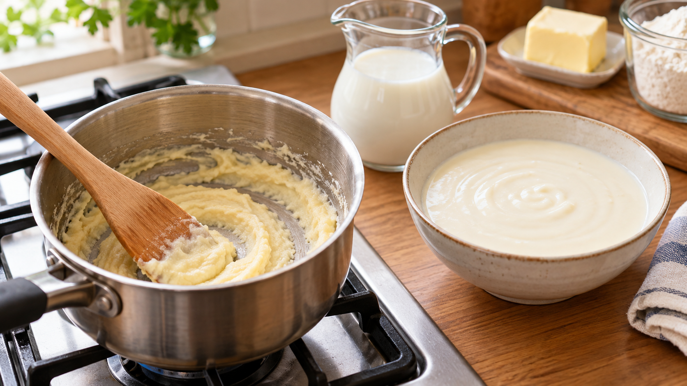

ルーは長く炒めるほど、とろみが弱くなる？｜でんぷんと焼き色の関係
グラタンのホワイトソースを作るとき、バターと小麦粉を丁寧に炒めたのに、牛乳を加えると思ったほどとろみがつかない。炒める時間が長すぎたのだろうか。
高い熱で色が濃くなるまで炒めたルーでは、ソースのとろみが弱くなることがある。ただし、時間の長さだけでは決まらない。
ホワイトソースのとろみは、小麦粉のでんぷんが牛乳の水分を吸い、熱で膨らむと生まれる。ルーを深く炒めると、この働きが変わる可能性がある。ただ、フライパンの中のルーの粘りと、牛乳を加えた完成ソースのとろみは別のものだ。
小麦粉とバターで作ったルーを調べた研究では、強く加熱したものから作るホワイトソースはとろみが大きく弱まった。一方、加熱を控えた条件では少し強まり、別の油脂を使った場合は目立った変化がなかった。ルーとホワイトソースの研究 別の研究でも、加熱を進めたルーから作るソースは粘りが弱くなった。ただし、それほど深く炒めない範囲では大きな差が出なかった。ルーとソースの研究
また、穏やかな加熱を調べた研究では、加熱を進めるとルーそのものの粘りが強くなった。短時間のルー加熱の研究 これは完成ソースの結果ではないが、「長く炒めれば必ずとろみが弱くなる」とは言えないことを示している。
つまり、家庭で気にしたいのは時計だけではなく、火の強さと焼き色だ。でんぷんの変化は理由の一つとして考えられるが、油脂や水分の違いも関わるため、焼き色だけで完成ソースのとろみを正確には予測できない。
白いクリームソースを作るなら、香ばしい茶色になるまで炒める必要はない。焦がさず、粉とバターがサラサラに混ざったところで牛乳を加える。この判断は研究結果を家庭で使うための考察で、家庭の鍋で最適な炒め時間を測った結果ではない。
基本のホワイトソース
農林水産省に掲載されたレシピ例に沿って作る。農林水産省のレシピ
材料（作りやすい分量）
- 牛乳：500ml
- 無塩バター：50g
- 強力粉：50g
作り方
- 鍋に無塩バターを入れ、弱火で溶かす。
- 強力粉を加え、木べらで混ぜながら焦がさずサラサラになるまで炒める。
- 牛乳を3〜4回に分けて加える。加えるたびによく混ぜ、ふつふつと温まってなめらかなとろみがつくまで火を通す。
カレーやブラウンシチューでは、香ばしさや色を出すためにルーを深く炒めることがある。そんなときは、白いソースと同じとろみを当然とは考えず、色や香りを優先した仕上がりとして見るとよい。これは研究を別の料理へ広げた考察だ。
次にホワイトソースを作るときは、炒める時間を延ばすことより、焦がさずサラサラになったところを見よう。とろみを保ちたい料理では、その見た目が火を止める目安になる。